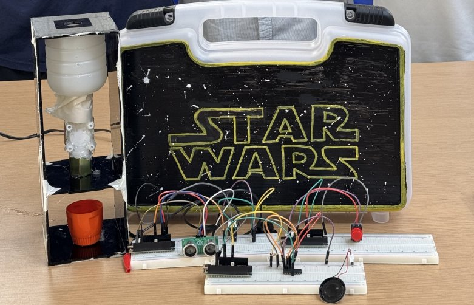
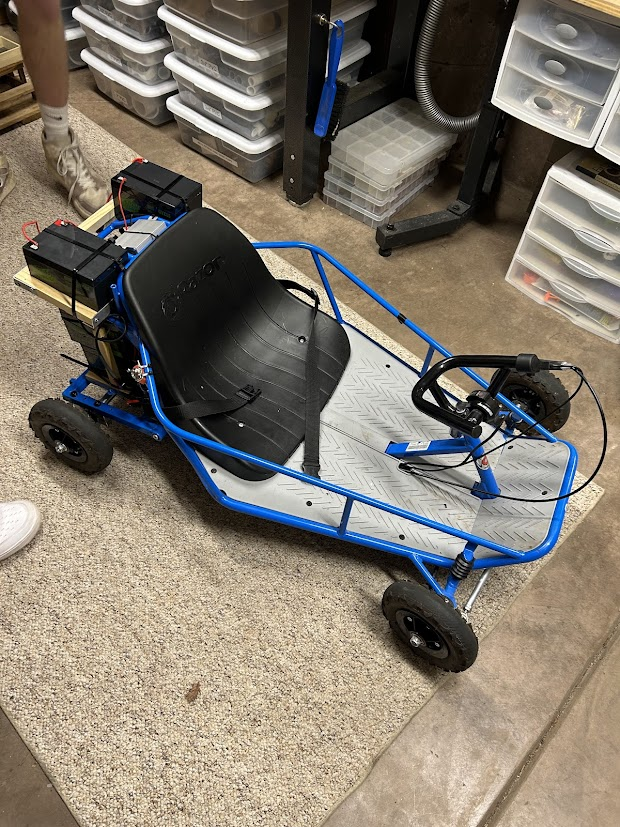
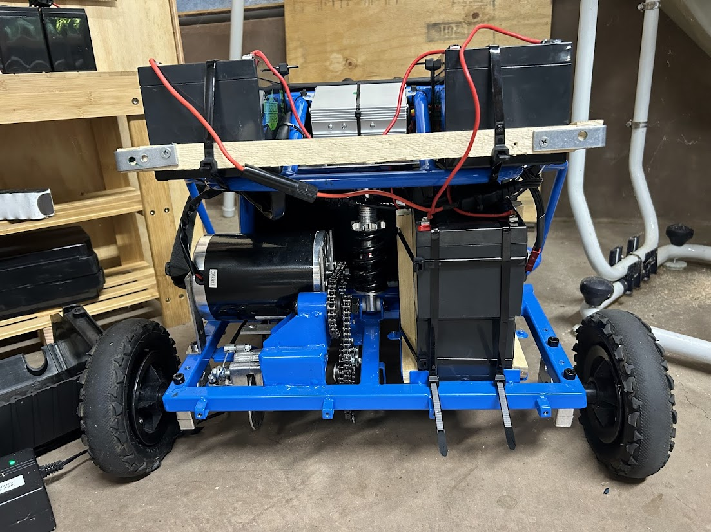
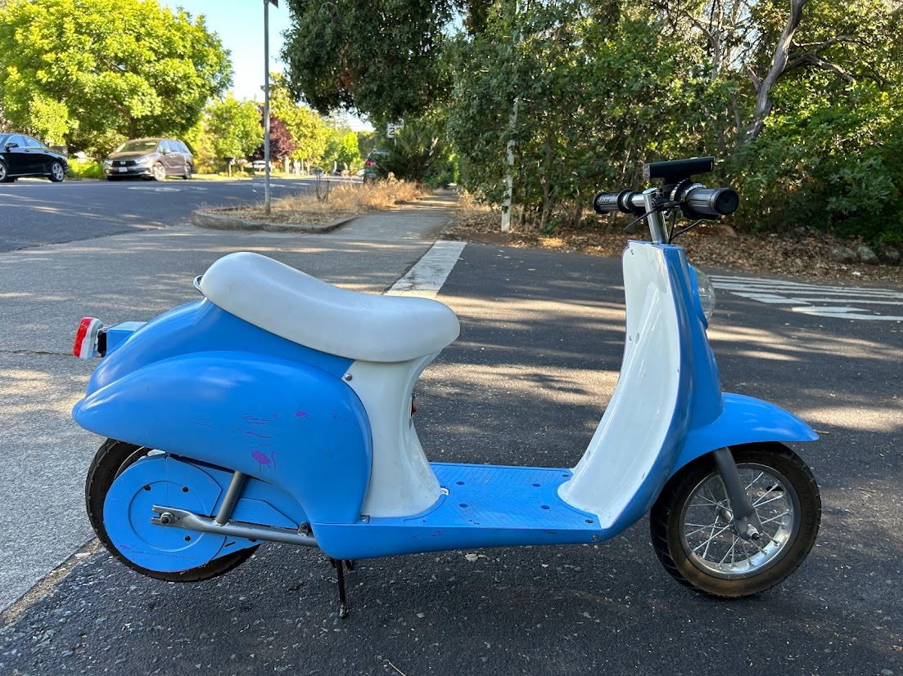
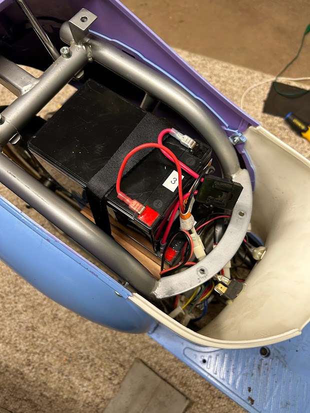
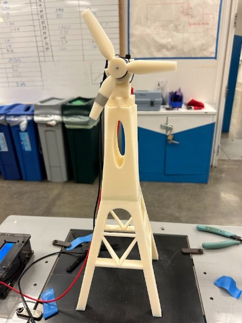
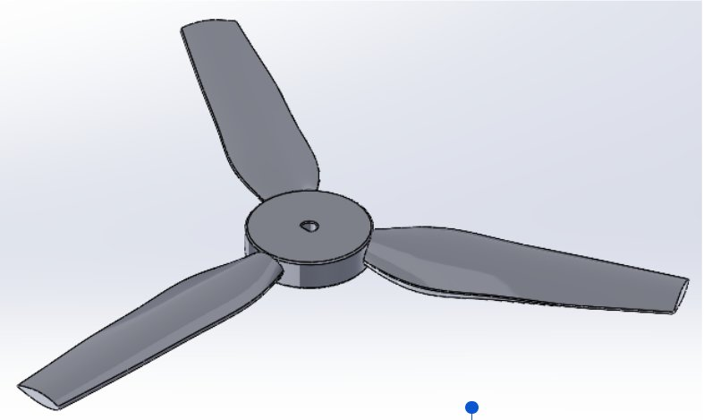
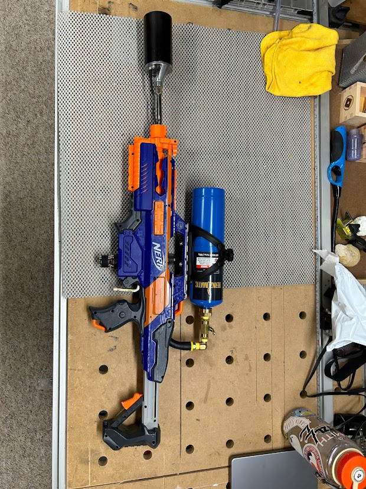
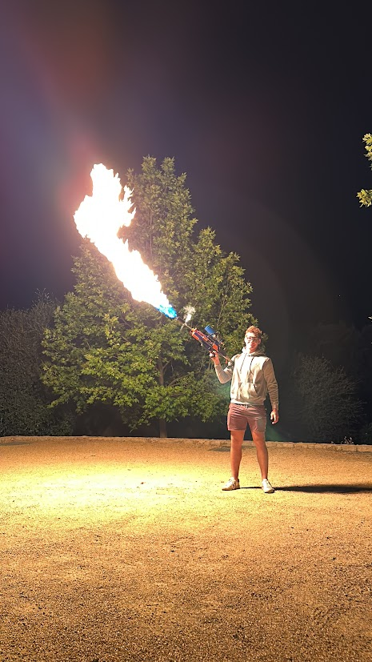

Work I've Built
A selection of hands-on engineering builds — from mechatronics capstones to backyard go-karts.
Senior capstone project: a fully automated T-shirt folding machine built from scratch. The drivetrain uses a DC motor with a complete custom transmission, while a set of servo motors drives two-bar linkages that execute precise, repeatable folding motions. I implemented a PI (proportional-integral) control loop to regulate actuator behavior and significantly improve consistency across cycles — bringing fold accuracy from erratic to repeatable within tight tolerances. The project required integrating mechanical design, embedded control, and iterative physical testing. For full details, schematics, and analysis, see the Final Project Report →
A multi-ESP32 IoT system for two-factor liquid dispensing. The device only pours when two independent conditions are simultaneously met: a button press is detected on one ESP32, and an ultrasonic proximity sensor confirms a cup is within range on another. Wireless communication between the microcontrollers uses a logic control layer to combine the signals — preventing accidental dispensing and demonstrating real-world sensor fusion. The system was wired with solenoid valves controlling fluid flow and was designed to be modular and expandable. View the full Project Report →

Battery-powered go-kart built entirely by hand. I designed and fabricated an external battery cage from raw materials using a band saw, miter saw, and drill press, then wired the motor, motor controller, and battery pack. Added off-road tires for traction and tuned the throttle response. The kart reaches 16 mph with a 200 lb driver — solid performance for a homebrew electric drivetrain with no commercial kit. The project required hands-on mechanical fabrication, electrical wiring, and iterative tuning under real load conditions.


Took a beat-up gas moped and converted it into an electric vehicle from the ground up. Swapped out the stock drivetrain components with a more powerful motor, upgraded motor controller, and a new battery pack. Added a twist throttle and rewired all electrical systems. The retrofitted moped reaches 13 mph with a 200 lb rider. The project reinforced skills in vehicle dynamics, component compatibility, and electrical integration — with the added challenge of making modern components fit legacy hardware.


Designed, CADed, and 3D printed a wind turbine blade assembly in SolidWorks. The project involved studying aerodynamic blade geometry, iterating on profiles for maximum lift-to-drag ratio, and prototyping multiple blade designs. The final design placed in the top 3 for blade efficiency and earned recognition for the most stable overall structure in the class competition. This project bridged fluid mechanics theory with hands-on rapid prototyping — design choices were directly validated by real wind-tunnel performance data.


Built a handheld DIY torch inspired by Elon Musk's infamous "Not a Flamethrower" — complete with a sparker ignition mechanism and a trigger for controlled combustion. Encased the whole assembly inside a hollowed-out Nerf gun shell (modified with a Dremel) for a clean, theatrical form factor. The project was an exercise in precision fabrication, creative enclosure design, and safely integrating flammable gas components — and honestly, a lot of fun.


A collection of 17 simulation projects spanning two domains: 9 that model manufacturing processes and 8 that model drone-based systems including LiDAR. Genetic algorithms were used to evolve and optimize parameters across generations, serving as an efficient alternative to exhaustive search in high-dimensional design spaces. The drone modeling projects include digital twins — virtual replicas that mirror real system behavior and allow safe, cost-effective parameter testing before physical deployment. Projects include flight path optimization, sensor coverage modeling, and process scheduling under constraints. View the full Course Project Portfolio →